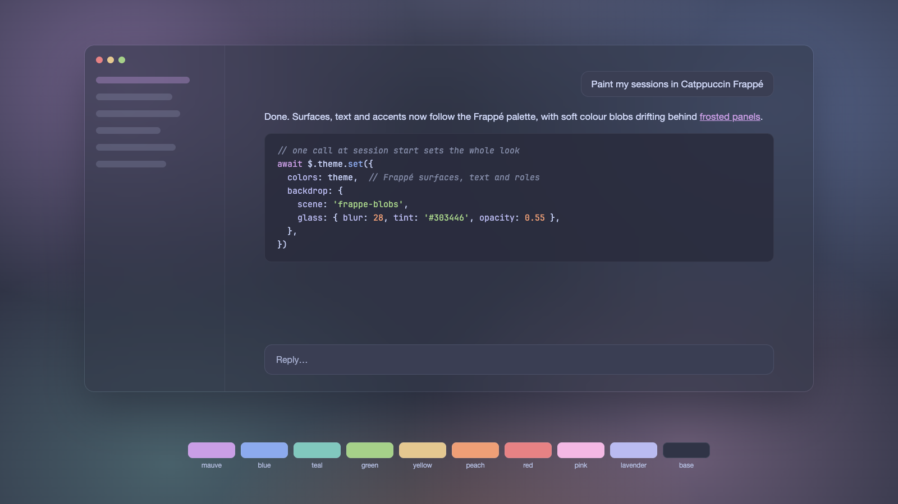

The Frappé palette, everywhere
Surfaces from base to surface0, Frappé text, a mauve accent, and red, green and yellow kept for errors, success and warnings. Git colours follow Frappé too.
Claude Code mod · v0.1.1 · MIT
Frappé surfaces, mauve accents and soft colour blobs drifting slowly behind frosted glass. One line to install, and every new session opens in it.
/plugin install catppuccin-frappe --marketplace amornnan19/claude-catppuccin-frappe-themeType it at the prompt of Claude Code in a terminal. Answer y to add the marketplace, then choose the user scope so every session gets it.
claude plugin install catppuccin-frappe --marketplace amornnan19/claude-catppuccin-frappe-themeRun it in any shell. It installs at the user scope; open a new session to see the theme.
amornnan19/claude-catppuccin-frappe-themeClick + next to the prompt box, then Plugins → Add marketplace and paste the line above. Then Add plugin and pick catppuccin-frappe.

Illustration of the look, drawn from the mod's own backdrop and palette.
The mod sets one look at the start of each session. The desktop and mobile apps draw it; the terminal CLI and editors keep their own colours.
Surfaces from base to surface0, Frappé text, a mauve accent, and red, green and yellow kept for errors, success and warnings. Git colours follow Frappé too.
Six pastel blobs drift behind the conversation over 43 to 67 seconds a loop. The app's panels blur them and lay a base tint on top, so words stay easy to read.
Text is Frappé text lifted a touch to #d0d8f7, and cards sit between base and surface0, so the desktop app's own contrast check accepts the whole theme.
Frappé is a dark palette, so the look is dark-only. With reduced motion turned on, every blob rests in place and nothing moves.
Straight from the Catppuccin Frappé palette. Click a swatch to copy its hex.
claude plugin marketplace update catppuccin-frappeclaude plugin update catppuccin-frappe@catppuccin-frappeThen open a new session. A session that is already open keeps the version it started with.